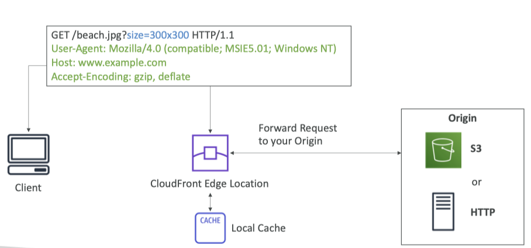
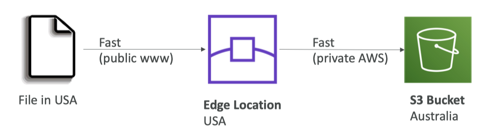
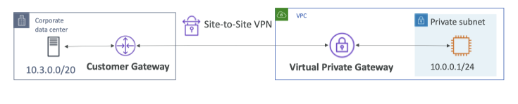
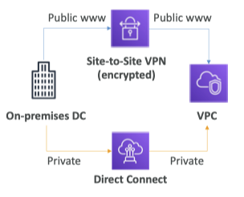

AWS Cloud Practitioner Summary¶
01-Introduction¶
02-Code and Slides¶
03-Cloud Computing¶
- IT Terminology
- Cloud Computing
- Deployment Models
- Five Characteristics
- Six Advantages
- Types of Cloud Computing Global Infrastructure
- Regions
- Availability Zones
- Edge Locations
- Shared Responsibility Model diagram
04-IAM ✅¶
-
IAM (Identity and Access Management): Global service
- Root account
- Users: mapped to a physical user, has a password for AWS Console
- Groups: contains users only
- Policies: outlines permissions for users or groups; The least privilege principle
- IAM Password Policy
-
MFA (Multi Factor Authentication)
-
Device options
- Virtual MFA device: e.g. Google Authenticator
- Hardware: Universal 2nd Factor (U2F) Security Key
-
Security: MFA + Password Policy
-
-
Access to AWS: ①AWS Management Console ②AWS CLI ➂AWS SDK
- Access Keys: Access Key ID = username; Secret Access Key = password
-
AWS CLI (Command Line Interface): manage your AWS services using the command-line
-
AWS SDK (Software Development Kit): manage your AWS services using a programming language
-
IAM Roles: for EC2 instances or AWS services; assign permissions to AWS services with IAM Roles
- Common roles: EC2 Instance Roles; Lambda Function Roles; Roles for CloudFormation
-
IAM Security Tools
- IAM Credentials Report (account-level)
- IAM Access Advisor (user-level)
05-EC2 ✅¶
-
EC2 = Elastic Compute Cloud = Infrastructure as a Service (IaaS)
-
Main components: EC2; EBS; ELB; ASG
-
EC2 Instance: AMI (OS) + Instance Size (CPU + RAM) + Storage + security groups + EC2 User Data
-
-
EC2 User Data: script to bootstrap our instances
- Bootstrapping means launching commands when a machine starts.
- EC2 User Data is only run once at the instance first start.
-
EC2 Instance Types
- General Purpose: Balance between compute, memory and networking
- Compute Optimized: Compute-intensive tasks
- Memory Optimized: Process large data sets in memory
- Storage Optimized: Process large data sets in memory
-
Security Groups: Firewall attached to the EC2 instance
- The fundamental of network security in AWS
- Only contain allow rules
- Can be attached to multiple instances
-
Classic ports
- 22 = SSH (Secure Shell) - log into a Linux instance
- 21 = FTP (File Transfer Protocol) – upload files into a file share
- 22 = SFTP (Secure File Transfer Protocol) – upload files using SSH
- 80 = HTTP – access unsecured websites
- 443 = HTTPS – access secured websites
- 3389 = RDP (Remote Desktop Protocol)
-
SSH: Start a terminal into our EC2 Instances (port 22) – log into a Windows instance
-
EC2 Instance Connect: Connect to your EC2 instance within your browser
-
Purchasing Options
-
On-Demand: Short workload, predictable pricing, pay by second
- Highest cost but no upfront payment
-
Reserved (1 & 3 years)
- Up to 72% discount
-
Recommended for steady-state usage applications (think database)
-
Reserved Instances: long workloads
- Convertible Reserved Instances: long workloads with flexible instances
-
Savings Plans (1 & 3 years)
- Commitment to an amount of usage, long workload
- Up to 72% discount
-
Spot Instances: sHort workloads; cheap; can lose instances (less reliable)
- Up to 90% discount; MOST cost-efficient
- Useful for workloads that are resilient to failure; Not suitable for critical jobs or databases
-
Dedicated Hosts: Book an entire physical server, control instance placement
- MOST expensive option
- Allows you address compliance requirements and use your existing server-bound software licenses
- Useful for software that have complicated licensing model
-
Dedicated Instances: No other customers will share your hardware
-
Capacity Reservations: Reserve On-Demand instances capacity in a specific AZ for any duration
- No time commitment; no billing discounts
- Suitable for short-term, uninterrupted workloads that needs to be in a specific AZ
-
06-EC2 Instance Storage ✅¶
-
EBS (Elastic Block Store) Volume
- Network drives attached to one EC2 instance at a time; A specific AZ; Have a provisioned capacity
- Can use EBS Snapshots for backups / transferring EBS volumes across AZ
Delete on Terminationattribute- EBS Snapshots: Make a backup (snapshot) of your EBS volume; Can copy snapshots across AZ or Region
- EBS Snapshot Archive: Archive tier is 75% cheaper; Need 24-72 hours to restore
- Recycle Bin: Retain deleted snapshots from 1 day to 1 year
-
AMI (Amazon Machine Image): Create ready-to-use EC2 instances with our customizations; A specific Region
- Types: Public AMI; Own AMI; Marketplace AMI
-
EC2 Image Builder: Automatically build, test and distribute AMIs
-
EC2 Instance Store
- High performance hardware disk attached to our EC2 instance
- Lost if our instance is stopped / terminated (ephemeral)
-
EFS (Elastic File System): Managed NFS (Network File System); Can be attached to 100s of instances in a region; Multi AZ; No capacity planning
EBS EFS One instance at a time 100s of EC2 instances One AZ multiple AZ Provisioned capacity No capacity planning -
EFS-IA (EFS Infrequent Access): Cost-optimized storage class for infrequent accessed files
- Up to 92% lower cost; Automatically move; A Lifecycle Policy
-
FSx: 3rd-party high-performance file systems; Fully managed
- FSx for Windows File Server: Network File System for Windows servers
- FSx for Lustre: Network File System for Windows servers
07-ELB & ASG ✅¶
-
Scalability: An application/system can handle greater loads by adapting.
- Vertical Scalability: Increasing the size of the instance; Common for non distributed systems, such as a database.
- Horizontal Scalability (= elasticity): Increasing the number of instances; Distributed systems
-
High Availability: At least 2 Availability Zones
- Goal: Survive a data center loss (disaster)
-
High Availability & Scalability For EC2
- Vertical Scaling (scale up/down)
- Horizontal Scaling (scale out/in): ELB; ASG
- High Availability: Multi AZ
-
Elasticity: Auto-scaling
-
Agility: Reduce the depolyment time
-
ELB (Elastic Load Balancers): Managed Load Balancer
-
Load Balancers: Forward Internet traffic to multiple servers downstream.
- Benefits: Spread load; DNS; Handle failures; Health checks; SSL termination; High availability
-
Distribute traffic across backend EC2 instances; Can be Multi-AZ
-
Supports health checks
-
3 Types
-
Application LB (HTTP–L7)
-
Network LB (TCP–L4)
- Classic LB (old)
-
-
-
ASG (Auto Scaling Groups)
- Implement Elasticity for your application; Across multiple AZ
- Scale EC2 instances based on the demand on your system; Replace unhealthy instances
- Integrated with ELB
- Cost Savings: only run at an optimal capacity
-
Scaling Strategies
- Manual Scaling
- Dynamic Scaling: Respond to changing demand
- Simple / Step Scaling
- Target Tracking Scaling
- Scheduled Scaling
- Predictive Scaling: Predict future traffic ahead of time
08-S3 ✅¶
-
Amazon S3 (Amazon Simple Storage Service): Regional level
- Buckets: Directories; Globally unique name
- Objects: Files; Key = a FULL path
-
S3 Security
- User based: IAM policies
- Resource Based: Bucket Policies; Object ACL (Access Control List); Bucket ACL
-
Bucket Policies: Grant public access to the bucket; JSON based policies
Block Public Access
- S3 Websites: Can host static websites
- Versioning: Version your files in Amazon S3; Enabled at the bucket level; Prevent accidental deletes
- S3 Access Logs: Audit purpose; Log requests made within your S3 bucket
- S3 Replication: Must enable versioning
- CRR (Cross Region Replication): Compliance, lower latency access, replication across accounts
- SRR (Same Region Replication): Log aggregation, live replication between production and test accounts
- S3 Lifecycle Rules: transition objects between classes
- S3 Storage Classes: High durability (99.999999999%, 11 9’s); Availability (99.99%)
- General Purpose: Used for frequently accessed data
-
Infrequent Access (IA): For less frequently accessed data
- Standard IA: Disaster Recovery, backups; 99.9% Availability (↓)
- One Zone IA: Storing secondary backup copies; 99.5% Availability (↓↓)
-
S3 Glacier: Low-cost object storage meant for archiving/backup
- S3 Glacier Instant Retrieval: Millisecond retrieval; Great for data accessed once a quarter; Minimum 90 days
- S3 Glacier Flexible Retrieval: Expedited (1 to 5 minutes), Standard (3 to 5 hours), Bulk (5 to 12 hours); Minimum 90 days
- S3 Glacier Deep Archive: For long term storage; Standard (12 hours), Bulk (48 hours); Minimum 180 days
-
S3 Intelligent-Tiering: Small monthly monitoring and auto-tiering fee; Moves objects automatically; No retrieval charges
- Frequent Access tier (automatic): Default tier
- Infrequent Access tier (automatic): Objects not accessed for 30 days
- Archive Instant Access tier (automatic): Objects not accessed for 90 days
- Archive Access tier (optional): Configurable from 90 days to 700+ days
- Deep Archive Access tier (optional): Configurable from 180 days to 700+ days
- S3 Object Lock: WORM (Write Once Read Many); Block an object version deletion for a specified amount of time
- Glacier Vault Lock: WORM; Lock the policy for future edits (can no longer be changed); Helpful for compliance and data retention
- S3 Encryption
- No Encryption
- Server-Side Encryption
- Client-Side Encryption
- Snow Family: Import data at edge onto S3 through a physical device
- Snowball Edge: TBs or PBs of data
- Snowball Edge Storage Optimized; Snowball Edge Compute Optimized
- Snowcone: Small, portable; 8 TBs; For space-constrained environment
- Snowmobile: Exabytes of data; 100 PB of capacity; High security; Recommend for more than 10 PB data; No Edge Computing
- Edge Computing: Process data while it’s being created on an edge location; Snowball Edge and Snowcone
- OpsHub: desktop application to manage Snow Family devices
- AWS Storage Gateway: Hybrid storage service to allow on-premises to seamlessly use the AWS Cloud
- Types: File Gateway; Volume Gateway; Tape Gateway
09-Databases ✅¶
-
Databases
- Relational Databases (RDB)
- NoSQL Databases (NDB)
-
RDS (Relational Database Service): Managed RDB service
- Postgres SQL; MySQL; MariaDB; Oracle; Microsoft SQL Server; Aurora (AWS Proprietary database)
-
Aurora: AWS proprietary, cloud-optimized RDB service
- PostgreSQL and MySQL
- Costs more than RDS (20% more) – but is more efficient
- RDS Deployments
- Read Replicas: Scale the read workload
- Multi-AZ: Failover in case of AZ outage (high availability)
- Multi-Region: Disaster recovery in case of region issue; Local performance
- ElastiCache: Managed RDB service for read intensive workloads;
- Redis or Memcached
- In-memory databases with high performance, low latency
- DynamoDB: Fully Managed NoSQL database across 3 AZ; Highly available; Serverless
- Scales to massive workloads
- Key/value database
- DAX (DynamoDB Accelerator): Fully Managed in-memory cache for DynamoDB; 10x performance improvement
- DynamoDB Global Tables: DynamoDB table accessible with low latency in multiple-regions; Active-Active replication
- Redshift: OLAP – online analytical processing (analytics and data warehousing)
- 10x better performance than other data warehouses
- EMR (Elastic MapReduce): Hadoop clusters (Big Data)
- Athena: Analyze data in S3 using serverless SQL
- QuickSight: Serverless machine learning-powered business intelligence service to create interactive dashboards
- DocumentDB: MongoDB, which a NoSQL database
- Neptune: Graph database
- QLDB (Quantum Ledger Database): Used to review history of all changes; Immutable
- A ledger is a book recording financial transactions.
- Amazon Managed Blockchain: a managed service to join public blockchain networks or create your own scalable private network
- Compatible with the frameworks Hyperledger Fabric and Ethereum
- Glue: Managed extract, transform, and load (ETL) service; Serverless
- Glue Data Catalog
- DMS (Database Migration Service)
- Homogeneous migrations: e.g. Oracle to Oracle
- Heterogeneous migrations: e.g. Microsoft SQL Server to Aurora
10-Other Compute Section ✅¶
-
Docker: Container technology to run applications
-
ECS (Elastic Container Service): Run Docker containers on EC2 instances
-
Fargate: Run Docker containers without provisioning the infrastructure
- Serverless offering (no EC2 instances to manage)
-
ECR (Elastic Container Registry): Private Docker Images Repository
-
Serverless: Developers don’t have to manage servers anymore
- Serverless == FaaS (Function as a Service)
- Serverless products so far: S3, DynamoDB, Margate, Lambda; API Gateway
-
Lambda: Serverless, Function as a Service, seamless scaling, reactive
- Lambda Pricing: Pay per calls; Pay per duration
- Language Support: many programming languages except (arbitrary) Docker
- Invocation time: up to 15 minutes
- Use cases:
- Create Thumbnails for images uploaded onto S3
- Run a Serverless cron job
-
APl Gateway: Expose Lambda functions as HTTP API
-
Batch: Run batch jobs on AWS across managed EC2 instances; Fully managed
-
Differences from Lambda
Lambda Batch Time limit No time limit Limited runtimes Any runtime as long as it’s packaged as a Docker image Limited temporary disk space Rely on EBS / instance store for disk space Serverless Relies on EC2 (can be managed by AWS)
-
-
Lightsail: Predictable & low pricing for simple application & DB stacks
- Great for people with little cloud experience
11-Deployment and Managing Infrastructure at Scale¶
- CloudFormation
- CDK
- Elastic Beanstalk
- CodeDeploy
- CodeCommit
- CodeBuild
- CodePipeline
- CodeArtifact
- CodeStar
- Cloud9
- SSM
- SSM Session Manager
- OpsWorks
- Deployment Summary
- Developer Services Summary
12-Global Infrastructure ✅¶
-
Global Application: deployed in multiple geographies
- On AWS: Resions and/or Edge Locations
- Benefits: Decresead latency; Disaster Recovery (DR); Attack protection
- Global AWS Infrastructure
- Regions
- Availability Zones (multiple data centers)
- Edge Locations (Points of Presence):
-
Route 53: Global managed DNS
-
DNS (Domain Name System) is a collection of rules and records which helps clients understand how to reach a server through URLs.
- Common records on AWS: A IPv4; AAA IPv6; CNAME; AWS resource
-
Routing Policies
- Simple: no health checks
- Weighted
- Latency
- Failover: disaster recovery
- health check on primary
-
-
CloudFront: Global Content Delivery Network (CDN)
-
Replicate part of your application to AWS Edge Locations – decrease latency
-
Cache common requests – improved user experience and decreased latency
-
DDoS protection with WAF and Shield
-
CloudFront Origins
-
An origin is the location where content is stored, and from which CloudFront gets content to serve to viewers.
-
S3 bucket; CloudFront Origin Access Identity (OAI)
- Custom Origin (HTTP); EC2 instance, S3 website

-
-
CloudFront vs S3 CRR
- CloudFront: Global; cached for A TTL (maybe a day); good for static content
- S3 CRR: each region; real-time; read-only; good for dynamic content
-
-
S3 Transfer Acceleration: accelerate global uploads & downloads into Amazon S3 using an AWS edge location

-
AWS Global Accelerator: improve global application availability and performance using the AWS global network
-
AWS Global Accelerator vs CloudFront
-
Both use AWS global network; Both integrate with AWS Shield for DDos protection
-
CloudFront: Content Delivery Network; cacheable
- AWS Global Accelerator: no caching; wide range of TCP or UDP
-
-
-
Outposts: Hybrid Cloud; Deploy Outposts Racks in your own Data Centers to extend AWS services
- Benefits: Low-latency; Local data; Easier migration; Fully managed
-
WaveLength
- Brings AWS services to the edge of the 5G networks
- Ultra-low latency applications; High-badwidth and secure connection
-
Local Zones
- Bring AWS resources (compute, database, storage, …) closer to your end users
- Good for latency-sensitive applications
-
Global Applications Architecture
High Availability Global Latency Difficulty 1 Single Region, Single AZ ✘ ✘ ★☆☆☆ 2 Single Region, Multi AZ ✔︎ ✘ ★★☆☆ Global Reads’ Latency Global Writes’ Latency Difficulty 3 Multi Region, Active-Passive ✔︎ ✘ ★★★☆ 4 Multi Region, Active-Active ✔︎ ✔︎ ★★★★
13-Cloud Integration¶
- Application Communication
- SQS
- Kinesis
- SNS
- Amazon MQ
- Summary
14-Cloud Monitoring¶
- CloudWatch
- CloudWatch Metrics
- CloudWatch Alarms
- CloudWatch Logs
- CloudWatch Events
- CloudTrail
- CloudTrail Events
- CloudTrail Insights
- X-Ray
- CodeGuru
- CodeGuru Reviewer
- CodeGuru Profiler
- Service Health Dashboard
- Personal Health Dashboard Summary
15-VPC & Networking ✅¶
-
VPC (Virtual Private Cloud): private network to deploy your resources; Regional resource
-
Subnets: network partition of the VPC; AZ resource
- Public Subnet
- Private Subnet
- Route Tables: define access to the internet and between subnets

-
Internet Gateway: at the VPC level, provide Internet Access
-
NAT Gateways (AWS-managed) & NAT Instances (self-managed): give internet access to private subnets

-
Network ACL (NACL): controls traffic from and to subnet
- ACL (network access control list)
-
Security Groups: controls traffic to and from an ENI / an EC2 Instance
Security group Network ACL instance level subnet level an instance all instances allow rules only allow rules and deny rules evaluate all rules evaluate rules in order Stateful Stateless 
-
VPC Flow Logs: network traffic logs; help to monitor & troubleshoot connectivity issues
-
VPC Peering: Connect two VPC with non overlapping CIDR (IP address ranges); non-transitive
-
VPC Endpoints: Provide private access to AWS Services within VPC
- VPC Endpoint Gateway: S3 & DynamoDB
- VPC Endpoint Interface: the rest
-
Site to Site VPN: VPN over public internet between on-premises DC (Data Center) and AWS
-
CGW (Customer Gateway): On-premises side
-
VGW (Virtual Private Gateway): AWS side 
-
-
Direct Connect (DX): direct private connection on-premises to AWS 
-
Transit Gateway: Transitive peering; Connect thousands of VPC and on-premises networks together
16-Security & Compliance Section¶
-
Shared responsibility

- AWS: of the cloud
- Customer: in the cloud
- Both: patch; configuration; awareness & training
- DDOS attack: Distributed Denial-of-Service attack
- DDOS protection on AWS:
- AWS Shield Standard
- AWS Shield Advanced
- AWS WAF
- CloudFront and Route 53 (global services)
- AWS Shield
- AWS Shield Standard
- AWS Shield Advanced
- WAF (Web Application Firewall)
- Penetration Testing
- 8 Free: EC2; RDS; CloudFront; Aurora; API Gateways; Lambda; Lightsail; Elastic Beanstalk
- Data at rest & Data in transit
- KMS (Key Management Service): manage the encryption keys
- CloudHSM (Hardware Security Module)
- CMK (Customer Master Keys)
- ACM (AWS Certificate Manager): SSL/TLS Certificates
- Secrets Manager
-
Artifact: compliance documentation & AWS agreements
-
Artifact Reports
- Artifact Agreements
- GuardDuty: intelligent threat discovery
- Inspector: automated security assessments
- AWS Config
-
Amazon Macie
-
Data security and data privacy service
- Protect sensitive data PII (personally identifiable information)
- AWS Security Hub: central security tool across several AWS accounts
- Amazon Detective: deeper analysis; the root cause of security issues
- AWS Abuse: report of resouces for abusive or illegal purposes
- Root user privileges
17-Machine Learning Section ✅¶
- Rekognition: face detection, labeling, celebrity recognition
- Transcribe: audio to text (ex: subtitles)
- Polly: text to audio
- Translate: translations
- Lex: build conversational bots – chatbots
- Connect: cloud contact center
- Comprehend: natural language processing
- SageMaker: machine learning for every developer and data scientist
- Forecast: build highly accurate forecasts
- Kendra: ML-powered search engine
- Personalize: real-time personalized recommendations
18-Account Management, Billing & Support Section¶
- AWS Organizations: multiple AWS accounts management
- Cost benefits: consolidated billing; volume discount; pooling of Reserved EC2 instances
- SCP (Service Control Policies): whitelist or blacklist IAM actions
- Consolidated billing: combined usage; one bill
- AWS Control Tower: Easy way to set up and govern a secure and compliant multi-account AWS environment based on best practices
- Pricing models in AWS
- Pay as you go
- Save when you reserve
- Pay less by using more
- Pay less as AWS grows
- Free services & free tier in AWS
- Compute Pricing
- EC2
- Lambda & ECS
- Storage Pricing
- S3
- EBS
- Database Pricing
- RDS
- Content Delivery Pricing - CloudFront
- Networking Costs in AWS per GB - Simplified
- Savings Plan
- AWS Compute Optimizer
- Billing and Costing Tools
- Estimating costs: Pricing Calculator
- Tracking costs: Billing Dashboard; Cost Allocation Tags; Cost and Usage Reports; Cost Explorer
- Monitoring against costs plans: Billing Alarms; Budgets
- Pricing Calculator: Estimate the cost for your solution architecture
- Billing Dashboard
- Free Tier Dashboard
- Cost Allocation Tags: track your AWS costs on a detailed level
- AWS generated tags
- User-defined tags
- Tagging and Resource Groups
- Tags
- Resource Groups
- Cost and Usage Reports
- Cost Explorer
- Billing Alarms in CloudWatch
- AWS Budgets
- Trusted Advisor: high level AWS account assessment
- Analyze on 5 categories: cost optimization; performance; security; fault tolerance; service limits
- Support plans
- 7 Core Checks (Basic & Developer Support plan)
- S3 Bucket Permissions
- Security Groups – Specific Ports Unrestricted
- IAM Use (one IAM user minimum)
- MFA on Root Account
- EBS Public Snapshots
- RDS Public Snapshots
- Service Limits
- Full Checks (Business & Enterprise Support plan)
- CloudWatch alarms; Programmatic Access using AWS Support API
- 7 Core Checks (Basic & Developer Support plan)
- Support Plans
- Basic Support Plan
- Customer Service & Communities - \(24 \times7\) access to customer service, documentation, whitepapers, and support forums.
- AWS Trusted Advisor - Access to the 7 core Trusted Advisor checks and guidance to provision your resources following best practices to increase performance and improve security.
- AWS Personal Health Dashboard - A personalized view of the health of AWS services, and alerts when your resources are impacted.
- Developer Support Plan
- Business hours email access
- General guidance: < 24 business hours
- System impaired: < 12 business hours
- Business Support Plan (24/7)
- \(24 \times7\) phone, email, and chat access
- Infrastructure Event Management for additional fee.
- Production system impaired: < 4 hours
- Production system down: < 1 hour
- Enterprise On-Ramp Support Plan (24/7)
- Production or business critical workloads
- A pool of Technical Account Managers (TAM)
- Concierge Support Team
- Infrastructure Event Management
- Business-critical system down: < 30 minutes
- Enterprise Support Plan (24/7)
- Mission critical workloads
- A designated Technical Account Manager (TAM)
- Business-critical system down: < 15 minutes
- Basic Support Plan
19-Advanced Identity¶
- STS (Security Token Service): temporary, limited privileges credentials to access AWS resources
- Amazon Cognito: identity for your Web and Mobile applications users (potentially millions); Google or FaceBook
- Microsoft Active Directory
-
Directory Services
- AWS Managed Microsoft AD
- AD Connector
- Simple AD
-
SSO (Single Sign-On): Centrally manage Single Sign-On to access multiple accounts and 3rd-party business
20-Other AWS Services¶
- WorkSpaces
- AppStream 2.0
- Sumerian
- loT Core
- Elastic Transcoder
- Device Farm
- Backup
- Disaster Recovery Strategies
- Elastic Disaster Recovery
- DataSync
- FIS
21-Architecting & Ecosystem¶
- General Guiding Principles
- Design Principles
- 6 Pillars
- Operational Excellence
- Security
- Reliability
- Performance Efficiency
- Cost Optimization
- Sustainability
- Well-Architected Tool
- Right Sizing
- Free resources
- AWS Support
- Marketplace
- Training
- Professional Services & Partner Network Knowledge Center
22-Exam Preparation¶
Created: 2022-11-28